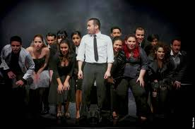

injectThis(`
<div class="container mt-4 ml-5">
        <link rel="stylesheet" href="./css/detalhe-evento.css" />    
    <nav aria-label="breadcrumb">
        <ol class="breadcrumb">
            <li class="breadcrumb-item"><a href="indexContent.html">Home</a></li>
            <li class="breadcrumb-item"><a href="eventos-categoria-teatro.html">Teatro</a></li>
            <li class="breadcrumb-item active" aria-current="page">Detalhe do Evento</li>
        </ol>
    </nav>


    <div class="conteudo">
        <div class="card mb-3">
            
            <span class="small m-2">Cartaz do Filme Capitã Marvel"</legenda>
                <div class="card-body">
                    <p class="small tipo-evento">
                        Teatro
                    </p>
                    <h5 class="card-title">
                        Espetáculo Companhia
                        <span class="classificacao_etaria_wrap">
                            <span title="Livre para todos os públicos"
                                class="classificacao_etaria doze">12</span>
                        </span>
                    </h5>
                    <p class="small">
                        COM Grupo Às de Teatro
                    </p>

                    <p class="card-text">
                        <strong>Com direção e adaptação de Glauver Souza, o musical, com um humor leve, 
                            aborda os relacionamentos da vida do personagem principal, Roberto, trazendo 
                            uma série de questionamentos sobre sua relação com os amigos e as mulheres.
                                Roberto vive diversas situações com seus casais de amigos e têm várias 
                                relações amorosas, porém foge do compromisso, dominado pela possessividade 
                                dos colegas que exigem dele companhia, tempo e bom humor. Com a chegada do 
                                seu aniversário de 35 anos, o protagonista reflete sobre a vida e seus 
                                relacionamentos e questiona-se: “por que amar?”.
                            <br><br>
                            Duração: 60 min
                            <br><br>
                            Quando 24/04/2019 Horário: 20:00h
                        <br><br>
                        <strong>Onde: Teatro Sesc </strong> <br>
                        <br>
                        
                    </p>
                    <p class="card-text">
                            <i class="far fa-money-bill-alt"></i>
                        <i class="fa fa-money"></i> Valores: Inteira R$ 15,00 e Meia (Estudantes, Professores e Aposentados) R$ 7,00
                    </p>
                    
                </div>
        </div>
    </div>

    <div id="map"></div>
</div>
`,'#bodyinject','./js/detalhe-evento.js');